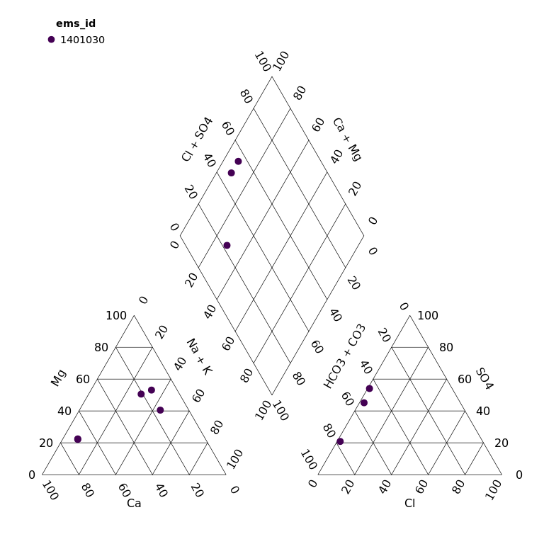

Previously known as rems2aquachem, as the scope of this tool has expanded, we have renamed it to better reflect what it does
The goal of bcgwcat is to provide easy access to EMS data as well as tools specific to those working with groundwater through R functions but also through a Shiny user-interface. This tool can help with:
- Downloading EMS data via the rems package
- Calculating charge balances
- Calculating water types
- Converting data to a format for importing into AquaChem
- Providing water quality summaries
- Piperplots and Stiff plots
In Detail
Update RStudio (if it’s been a while)
Update R (if it’s been a while)
Open RStudio
-
Install pak In the console type the following and hit enter
install.packages("pak") -
Install bcgwcat In the console type the following and hit enter (be sure to install all updates if prompted!)
pak::pkg_install("bcgov/bcgwcat")
Troubleshooting
-
Update rems In the console type the following and hit enter
pak::pkg_install("bcgov/rems")Note: If you run into errors during the rems data updates, this might be due to old rems caches.
Try the following:Uninstall rems - RStudio, go to the lower right hand window, click on the “Packages” tab, in the search bar, search for “rems”, then click on the “X” in a circle to the right of it’s name.
Remove the rems cache - Delete the cache folders by going to
C:\Users\YOUR_USER\AppData\Local(windows) or~/Library/Application Support (mac)and delete the “rems” folderRe-install rems
pak::pkg_install("bcgov/rems")and then try again
-
Update all packages If you run into errors right at the start, consider updating your packages.
pak::pkg_install("bcgov/bcgwcat", upgrade = TRUE)
Using bcgwcat
Shiny User-Interface
Type this line into the R console at the prompt (in the screen with >) and hit ‘Enter’.
bcgwcat::gw_app() # Launch the appSee the tutorial for a more in-depth look at how to use the User Interface

R command line
bcgwcat can also be used directly from R.
To extract EMS data, and convert for use in AquaChem… (by default saved as CSV)
library(bcgwcat)
r <- rems_to_aquachem(ems_ids = c("1401030", "1401377", "E292373"))#> Checking for locally stored historical data...
#> Last download was 2 days ago
#> If you would like to update historical data, run 'rems::download_historic_data()'
#> Checking for locally stored recent data...
#> Fetching data from cache...
#> For consistency EMS charge balances, anion sums, and cation sums have been replaced with recalculated values.
#> See `?charge_balance` for more details.
r#> # A tibble: 16 × 178
#> Sample_Date SampleID Coord_Lat Project Coord_Long StationID Watertype
#> <chr> <chr> <chr> <chr> <chr> <chr> <chr>
#> 1 "" "" ° "" ° "" ""
#> 2 "1987-07-07" "1401030-1" 49.20635 "BACKGROUN… -119.82532 "075" "Fresh W…
#> 3 "1991-08-07" "1401030-2" 49.20635 "BACKGROUN… -119.82532 "075" "Fresh W…
#> 4 "1994-06-08" "1401030-3" 49.20635 "BACKGROUN… -119.82532 "075" "Fresh W…
#> 5 "2001-09-09" "1401030-4" 49.20635 "BACKGROUN… -119.82532 "075" "Fresh W…
#> 6 "2009-11-11" "1401030-5" 49.20635 "BACKGROUN… -119.82532 "075" "Fresh W…
#> 7 "2010-08-09" "1401030-6" 49.20635 "BACKGROUN… -119.82532 "075" "Fresh W…
#> 8 "2016-11-02" "1401030-7" 49.20635 "BACKGROUN… -119.82532 "075" "Fresh W…
#> 9 "2018-06-14" "1401030-8" 49.20635 "BACKGROUN… -119.82532 "075" "Ground …
#> 10 "1987-07-07" "1401377-1" 49.175 "BACKGROUN… -119.7353 "203" "Fresh W…
#> 11 "1989-10-11" "1401377-2" 49.175 "BACKGROUN… -119.7353 "203" "Fresh W…
#> 12 "1994-03-24" "1401377-3" 49.175 "BACKGROUN… -119.7353 "203" "Fresh W…
#> 13 "2016-11-02" "1401377-4" 49.175 "BACKGROUN… -119.7353 "203" "Fresh W…
#> 14 "2020-06-29" "1401377-5" 49.175 "BACKGROUN… -119.7353 "203" "Ground …
#> 15 "2015-03-06" "E292373-1" 49.364604 "GROUNDWAT… -124.6141… "426" "Fresh W…
#> 16 "2017-10-11" "E292373-2" 49.364604 "GROUNDWAT… -124.6141… "426" "Fresh W…
#> # ℹ 171 more variables: Analysis_Date <chr>, shortWatertype <chr>,
#> # Comment <chr>, Reference <chr>, Quality_control <chr>, Duplicate_ID <chr>,
#> # Labcode <chr>, Location <chr>, Geology <chr>, X <chr>, Y <chr>,
#> # Elevation <chr>, Well_Depth <chr>, Screen_Top <chr>, Screen_Mid <chr>,
#> # Screen_Bottom <chr>, Gradient <chr>, Station_Comment <chr>,
#> # Sample_Depth <chr>, Temp <chr>, `14C` <chr>, `18O` <chr>, `2H` <chr>,
#> # Ag_diss <chr>, Ag_tot <chr>, Al_diss <chr>, Al_tot <chr>, As_diss <chr>, …To create plots…
piper_plot(r, ems_id = "1401030")
stiff_plot(r, ems_id = "1401030")
Vignette/Tutorials
See the bcgwcat website
License
Copyright 2024 Province of British Columbia
Licensed under the Apache License, Version 2.0 (the “License”); you may not use this file except in compliance with the License. You may obtain a copy of the License at
http://www.apache.org/licenses/LICENSE-2.0
Unless required by applicable law or agreed to in writing, software distributed under the License is distributed on an “AS IS” BASIS, WITHOUT WARRANTIES OR CONDITIONS OF ANY KIND, either express or implied. See the License for the specific language governing permissions and limitations under the License.